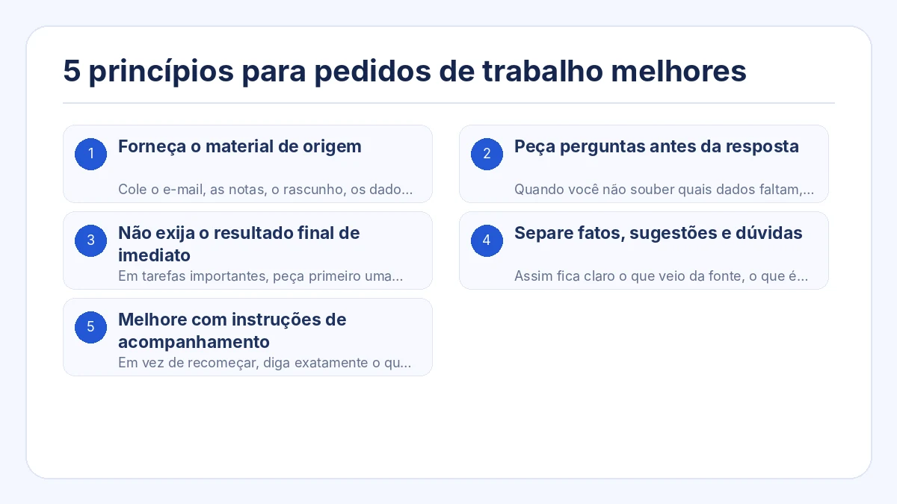
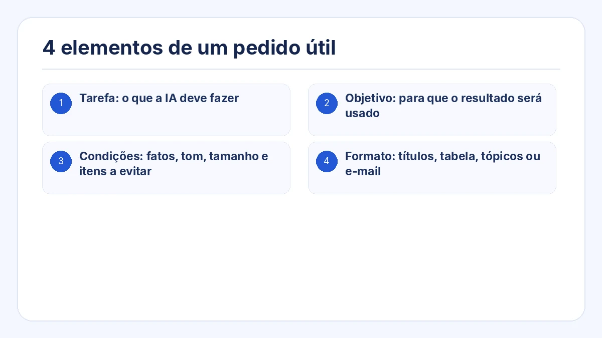
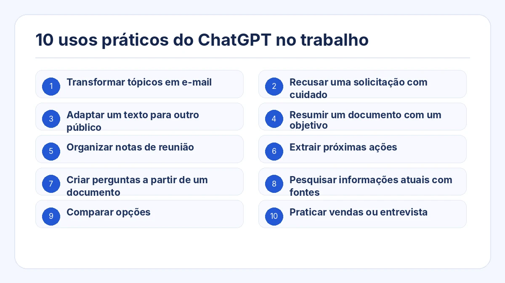
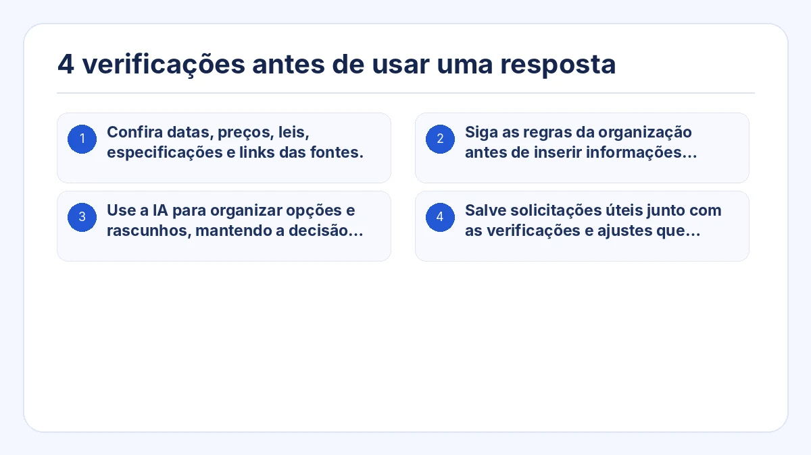

Este guia mostra uma forma prática de usar o ChatGPT no trabalho. O objetivo não é decorar um prompt mágico, mas oferecer contexto, condições e formato de saída adequados à tarefa.
Você pode copiar o exemplo, substituir as informações entre colchetes e revisar o resultado antes de usá-lo em uma situação real.
Pontos principais
- Forneça o material de origem em vez de pedir que a IA invente tudo do zero.
- Peça que faça perguntas quando faltarem informações importantes.
- Divida tarefas complexas em planejamento, revisão e redação.
- Separe fatos, sugestões e pontos não confirmados quando a precisão for importante.
- Revise a primeira resposta e use instruções específicas para melhorá-la.

1. Forneça o material de origem
Cole o e-mail, as notas, o rascunho, os dados ou os tópicos que devem servir de base. Diga para não acrescentar fatos que não estejam no material.
2. Peça perguntas antes da resposta
Quando você não souber quais dados faltam, peça ao ChatGPT que identifique as lacunas e faça no máximo três perguntas antes de responder.
3. Não exija o resultado final de imediato
Em tarefas importantes, peça primeiro uma estrutura ou lista de pontos. Confirme a direção e só depois solicite o texto final.
4. Separe fatos, sugestões e dúvidas
Assim fica claro o que veio da fonte, o que é uma proposta da IA e o que ainda precisa de confirmação humana.
5. Melhore com instruções de acompanhamento
Em vez de recomeçar, diga exatamente o que mudar: reduzir, usar tom mais calmo, colocar a conclusão primeiro ou remover afirmações sem respaldo.
4 elementos de um pedido útil
Substitua as partes entre colchetes pela sua situação. Peça à IA que não invente informações ausentes e que liste separadamente os pontos que precisam de confirmação.
- Tarefa: o que a IA deve fazer
- Objetivo: para que o resultado será usado
- Condições: fatos, tom, tamanho e itens a evitar
- Formato: títulos, tabela, tópicos ou e-mail

## Tarefa
Crie uma resposta para a mensagem do cliente abaixo.
## Objetivo
Reconhecer o problema, explicar o que está confirmado e deixar claro o próximo passo.
## Material de origem
[Cole a mensagem do cliente e os fatos internos confirmados]
## Condições
- Não prometer prazo de recuperação que não esteja confirmado.
- Separar fatos confirmados de pontos ainda em investigação.
- Usar tom profissional e tranquilo.
- Não acrescentar informações ausentes do material.
## Formato
1. Assunto
2. Corpo do e-mail
3. Pontos que precisam de confirmação antes do envio10 usos práticos do ChatGPT no trabalho

1. Transformar tópicos em e-mail
Informe destinatário, objetivo, pontos, prazo e tom.
2. Recusar uma solicitação com cuidado
Explique o que não pode ser feito, o motivo que pode ser compartilhado e uma alternativa realista.
3. Adaptar um texto para outro público
Mantenha os fatos e ajuste a explicação para cliente, liderança ou iniciante.
4. Resumir um documento com um objetivo
Defina quem vai ler e qual decisão precisa tomar.
5. Organizar notas de reunião
Extraia decisões, tarefas, responsáveis, prazos e pendências.
6. Extrair próximas ações
Separe informações para leitura de tarefas que precisam ser executadas.
7. Criar perguntas a partir de um documento
Encontre lacunas, contradições, riscos e pontos que exigem confirmação.
8. Pesquisar informações atuais com fontes
Peça datas, fontes primárias e separação entre fatos e interpretação.
9. Comparar opções
Defina critérios e prioridades da situação real.
10. Praticar vendas ou entrevista
Defina papel, cenário, regras de conversa e critérios de feedback.
4 verificações antes de usar uma resposta
- Confira datas, preços, leis, especificações e links das fontes.
- Siga as regras da organização antes de inserir informações confidenciais.
- Use a IA para organizar opções e rascunhos, mantendo a decisão final com uma pessoa responsável.
- Salve solicitações úteis junto com as verificações e ajustes que tornaram o resultado utilizável.

Perguntas frequentes
Um prompt mais longo sempre gera resposta melhor?
Não. O importante é incluir as informações necessárias. Contexto em excesso pode esconder as condições principais.
O que fazer quando a resposta não corresponde ao esperado?
Descreva a diferença específica: tamanho, público, tom, estrutura ou mistura entre fatos e sugestões.
Como usar o ChatGPT quando não sei o que pedir?
Peça que ele faça perguntas primeiro: “Faça uma pergunta por vez até ter informações suficientes para concluir esta tarefa”.
Monte uma solicitação de IA pronta para o trabalho a partir de uma tarefa
Crie solicitações estruturadas sem começar de uma página em branco
Prompt Ready inclui usos como responder mensagens, organizar reuniões, adaptar textos, comparar, pesquisar e praticar conversas. Escolha o uso, adicione material e condições e copie a solicitação.
Prompt Ready é um aplicativo para Windows e macOS que ajuda a criar solicitações estruturadas para ChatGPT, Gemini, Claude e outros serviços de IA. Escolha a tarefa, adicione o texto original e as condições e copie uma solicitação pronta para uso.
O Prompt Ready processa o texto localmente e não o envia automaticamente para um serviço externo de IA ou para o servidor do desenvolvedor. Depois de colar a solicitação em um serviço de IA, passa a valer a política de dados desse serviço.
Comece por uma tarefa real e melhore a solicitação pelo diálogo
Escolha uma tarefa que você já realiza, como responder um cliente, organizar uma reunião ou comparar opções. Acrescente objetivo, condições e formato e trate a primeira resposta como rascunho.